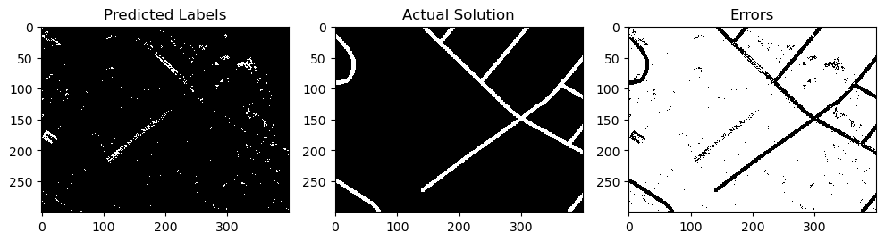
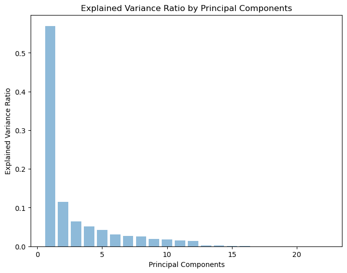

# Import packages
import numpy as np
import skimage.io as skio
import skimage.morphology as skm
from skimage import feature
from skimage.color import rgb2gray
from matplotlib import pyplot as plt
import pandas as pd
from sklearn.ensemble import RandomForestClassifier
from sklearn.metrics import confusion_matrix
from sklearn.cluster import KMeans
from sklearn.utils.random import sample_without_replacement
from sklearn.preprocessing import StandardScaler
from sklearn.decomposition import PCA
from scipy.ndimage import gaussian_filter
from scipy.ndimage import gaussian_laplace
from scipy.ndimage import maximum_filter
from scipy.ndimage import minimum_filter
from scipy.ndimage import median_filterPackages, Data, Functions
Packages, Data, Functions
# Read the data
rgb = skio.imread("../../data/MA_roads/tiff/train/10828735_15.tiff")
ans = skio.imread("../../data/MA_roads/tiff/train_labels/10828735_15.tif") > 0
rgb_test = skio.imread("../../data/MA_roads/tiff/train/21929005_15.tiff")
ans_test = skio.imread("../../data/MA_roads/tiff/train_labels/21929005_15.tif") > 0
# Display training data and correct output
fig, ax = plt.subplots(1, 2, figsize = (10, 6))
skio.imshow(rgb, ax = ax[0])
ax[0].set_title("Data")
skio.imshow(ans, ax = ax[1])
ax[1].set_title("Solution");# Function to compute DICE
smooth=1
def dice_coef(y_true, y_pred):
intersection = np.sum(y_true * y_pred)
return (2. * intersection + smooth) / (np.sum(y_true) + np.sum(y_pred) + smooth)
# Function to print several accuracy metrics
def accuracy_metrics(y_true, y_pred):
# Create confusion matrix
C = confusion_matrix(y_true, y_pred, labels=(True, False))
# Overall accuracy rate
acc = (C[0,0] + C[1,1])/C.sum()
# Recall
recall = (C[0,0])/(C[0,0] + C[1,0])
# Precision
prec = (C[0,0])/(C[0,0] + C[0,1])
# DICE
dice = dice_coef(y_true, y_pred)
# Print results
print("Confusion matrix:\n", C)
print("Overall accuracy:", np.round(acc, 3), "\nPrecision:", np.round(recall, 3),
"\nRecall", np.round(prec, 3), "\nDICE:", np.round(dice, 3))
# Function to compute layers for additional model features
def compute_features(img, include_categorical = True):
# Range of values (gray pixels will have low range)
r = img.max(axis = 2) - img.min(axis = 2)
if include_categorical:
# Canny edge detection
canny_edges_r = feature.canny(img[:,:,0], sigma=4)
canny_edges_g = feature.canny(img[:,:,1], sigma=4)
canny_edges_b = feature.canny(img[:,:,2], sigma=4)
img = np.dstack([img, canny_edges_r, canny_edges_g, canny_edges_b])
# Gaussian blur sigma = 1
gaus_r_1 = gaussian_filter(img[:,:,0], sigma = 1)
gaus_g_1 = gaussian_filter(img[:,:,1], sigma = 1)
gaus_b_1 = gaussian_filter(img[:,:,2], sigma = 1)
# Gaussian blur sigma = 3
gaus_r_3 = gaussian_filter(img[:,:,0], sigma = 3)
gaus_g_3 = gaussian_filter(img[:,:,1], sigma = 3)
gaus_b_3 = gaussian_filter(img[:,:,2], sigma = 3)
# Gaussian blur sigma = 5
gaus_r_5 = gaussian_filter(img[:,:,0], sigma = 5)
gaus_g_5 = gaussian_filter(img[:,:,1], sigma = 5)
gaus_b_5 = gaussian_filter(img[:,:,2], sigma = 5)
# LoG blur sigma = .5
log_r_5 = gaussian_laplace(img[:,:,0], sigma = .5)
log_g_5 = gaussian_laplace(img[:,:,1], sigma = .5)
log_b_5 = gaussian_laplace(img[:,:,2], sigma = .5)
# LoG blur sigma = .6
log_r_6 = gaussian_laplace(img[:,:,0], sigma = .6)
log_g_6 = gaussian_laplace(img[:,:,1], sigma = .6)
log_b_6 = gaussian_laplace(img[:,:,2], sigma = .6)
# LoG blur sigma = .8
log_r_8 = gaussian_laplace(img[:,:,0], sigma = .8)
log_g_8 = gaussian_laplace(img[:,:,1], sigma = .8)
log_b_8 = gaussian_laplace(img[:,:,2], sigma = .8)
# Add layers to model
return np.dstack([img, r,
gaus_r_1, gaus_g_1, gaus_b_1, gaus_r_3, gaus_g_3, gaus_b_3,
gaus_r_5, gaus_g_5, gaus_b_5, log_r_5, log_g_5, log_b_5,
log_r_6, log_g_6, log_b_6, log_r_8, log_g_8, log_b_8])Create Training and Testing Subsets
# Create training subset of data
# It takes too much computing power to run the model on the whole image on our own machines
small_rgb = rgb[0:400, 1200:, :]
small_ans = ans[0:400, 1200:]
# small_rgb = rgb
# small_ans = ans
fig, ax = plt.subplots(1, 2, figsize = (10, 6))
skio.imshow(small_rgb, ax = ax[0])
ax[0].set_title("Training Data")
skio.imshow(small_ans, ax = ax[1])
ax[1].set_title("Training Solution");# Create testing subset of data
# It takes too much computing power to run the model on the whole image on our own machines
small_rgb_test = rgb[1200:, 0:400, :]
small_ans_test = ans[1200:, 0:400]
# small_rgb_test = rgb_test
# small_ans_test = ans_test
fig, ax = plt.subplots(1, 2, figsize = (10, 6))
skio.imshow(small_rgb_test, ax = ax[0])
ax[0].set_title("Testing Data")
skio.imshow(small_ans_test, ax = ax[1])
ax[1].set_title("Testing Solution");
Random Forest Model: RGB
Train model
# Flatten images
train_small_rgb = small_rgb.reshape(small_rgb.shape[0]*small_rgb.shape[1], 3)
y_train = small_ans.reshape(small_ans.shape[0]*small_ans.shape[1])# Create model
RF = RandomForestClassifier()
# Fit and output the performance of the model
model1 = RF.fit(train_small_rgb, y_train)# Predictions on training data
model1_pred = model1.predict(train_small_rgb)
# Confusion matrix
accuracy_metrics(y_train, model1_pred)Confusion matrix:
[[ 8989 4034]
[ 1545 105432]]
Overall accuracy: 0.954
Precision: 0.853
Recall 0.69
DICE: 0.763While we have a really good overall accuracy rate, we are correctly predicting only 68.7% of the actual road pixels. With a precision of 0.854, about 85.4% of our road predictions are actually roads.
# Convert predictions to image
train_preds = model1_pred.reshape(small_ans.shape[0], small_ans.shape[1])
# Create figure
fig, ax = plt.subplots(1, 2, figsize = (10, 6))
skio.imshow(train_preds, ax = ax[0])
ax[0].set_title("Predicted Labels")
skio.imshow(small_ans, ax = ax[1])
ax[1].set_title("Actual Solution");
Visually, our solution looks alright, but it obviously has room for improvement. Let’s see what our results look like on the testing data.
Test model
# Flatten images
test_small_rgb = small_rgb_test.reshape(small_rgb_test.shape[0]*small_rgb_test.shape[1], 3)
y_test = small_ans_test.reshape(small_ans_test.shape[0]*small_ans_test.shape[1])# Predictions on testing data
model1_test_pred = model1.predict(test_small_rgb)
# Confusion matrix
accuracy_metrics(y_test, model1_test_pred)Confusion matrix:
[[ 598 6505]
[ 4840 108057]]
Overall accuracy: 0.905
Precision: 0.11
Recall 0.084
DICE: 0.095While we still have a good overall accuracy rate, our predictions of roads is substantially worse. We have only classified 8.3% of the road pixels correctly, and only 11.3% of our road predictions were actually roads.
# Convert predictions to image
test_preds = model1_test_pred.reshape(small_ans_test.shape[0], small_ans_test.shape[1])
# Create figure
fig, ax = plt.subplots(1, 2, figsize = (10, 6))
skio.imshow(test_preds, ax = ax[0])
ax[0].set_title("Predicted Labels")
skio.imshow(small_ans_test, ax = ax[1])
ax[1].set_title("Actual Solution");
Our model did NOT generalize well! This looks terrible!
Incorporating Additional Layers
Create Features
Near the beginning of this notebook, we wrote a function to calculate a number of features that may help with road identification. Here, we call our function and inspect some of those layers.
# Create features
small_rgb_layers = compute_features(small_rgb)# Inspect features
fig, ax = plt.subplots(2, 2, figsize = (8, 8))
skio.imshow(small_rgb_layers[:,:,6], ax = ax[0,0])
ax[0,0].set_title("Range of RGB")
skio.imshow(small_rgb_layers[:,:,3], cmap = "gray", ax = ax[0,1])
ax[0,1].set_title("Canny Edges Red")
skio.imshow(small_rgb_layers[:,:,10:13], ax = ax[1,0])
ax[1,0].set_title("Gaussian Blur RGB")
skio.imshow(small_rgb_layers[:,:,16:19], ax = ax[1,1])
ax[1,1].set_title("Log of Gaussian RGB");/Users/liamsmith/opt/anaconda3/envs/csci0452/lib/python3.12/site-packages/skimage/io/_plugins/matplotlib_plugin.py:149: UserWarning: Low image data range; displaying image with stretched contrast.
lo, hi, cmap = _get_display_range(image)
On the top left is the range of red, green and blue for each pixel. We chose this feature because roads are gray, and in the RGB color space, gray pixels have similar values of red, green and blue.
On the top right is canny edges for the red channel. We created this feature hoping to detect the edges of roads, but as you can see, it detects edges in many objects other than roads. We include canny edges in the red, green and blue channels.
On the bottom left is the original image after gaussian blurring with \(\sigma = 3\). Our thought process here was that there might be some noise in the image leading random pixels to have the same R, G, and B values as roads. By blurring the image, we hoped to account for this by giving some weight to the values of nearby pixels. We include gaussian blur with \(\sigma = 1\), \(\sigma = 3\), and \(\sigma = 5\) for red, green and blue, hoping that our model might learn from multiple blurring radii.
On the bottom right is our image after the log of gaussian filter has been applied to the red, green and blue channels. We hopes to pick up on the width/frequency of roads with this filter, so we included this filter for \(\sigma = 0.5\), \(\sigma = 0.6\), and \(\sigma = 0.8\).
Train Model
# Train model
# Flatten image
train_small_rgb_layers = small_rgb_layers.reshape(small_rgb_layers.shape[0]*small_rgb_layers.shape[1], 25)
# Create model
RF = RandomForestClassifier()
# Fit and output the performance of the model
model2 = RF.fit(train_small_rgb_layers, y_train)
# Predictions on training data
model2_pred = model2.predict(train_small_rgb_layers)
# Confusion matrix
accuracy_metrics(y_train, model2_pred)Confusion matrix:
[[ 13021 2]
[ 0 106977]]
Overall accuracy: 1.0
Precision: 1.0
Recall 1.0
DICE: 1.0Before adding the additional layers to our training data, our overall accuracy was 0.954, precision was 0.854, and recall was 0.69 on our training data. Now we have virtually perfect results! Let’s look at an image of the output.
# Convert predictions to image
train_preds = model2_pred.reshape(small_ans.shape[0], small_ans.shape[1])
# Create figure
fig, ax = plt.subplots(1, 3, figsize = (10, 6))
skio.imshow(train_preds, ax = ax[0])
ax[0].set_title("Predicted Labels")
skio.imshow(small_ans, ax = ax[1])
ax[1].set_title("Actual Solution")
skio.imshow(train_preds==small_ans, ax = ax[2])
ax[2].set_title("Errors (look closely)");
Yep, can’t even find the errors without looking closely at the difference between the two images. Let’s evaluate our results on the testing data!
Test Model
# Create additional features
small_rgb_test_layers = compute_features(small_rgb_test)# Flatten image
test_small_rgb_layers = small_rgb_test_layers.reshape(small_rgb_test_layers.shape[0]*small_rgb_test_layers.shape[1], 25)
# Predictions on testing data
model2_test_pred = model2.predict(test_small_rgb_layers)
# Confusion matrix
accuracy_metrics(y_test, model2_test_pred)Confusion matrix:
[[ 345 6758]
[ 1914 110983]]
Overall accuracy: 0.928
Precision: 0.153
Recall 0.049
DICE: 0.074# Convert predictions to image
test_preds = model2_test_pred.reshape(small_ans_test.shape[0], small_ans_test.shape[1])
# Create figure
fig, ax = plt.subplots(1, 3, figsize = (10, 6))
skio.imshow(test_preds, ax = ax[0], cmap = "gray")
ax[0].set_title("Predicted Labels")
skio.imshow(small_ans_test, ax = ax[1])
ax[1].set_title("Actual Solution")
skio.imshow(test_preds==small_ans_test, ax = ax[2])
ax[2].set_title("Errors");
Adding these filters to our model had negligible impact on our results. It improved the accuracy from 0.906 to 0.927 and the precision from 0.113 to 0.147, but the recall dropped from 0.086 to 0.047. This means that of the pixels that actually represent roads, we are only correctly classifying 4.7% of them. With perfect results on our training data and pitiful results on our testing data, it appears that incorporating these features in our training data led to severe overfitting!
Sampling for Overfitting
We have fed a substantial amount of data, which ought to contain some useful information regarding roads, to our model In our training solution, this data was in fact useful, leading to virtually 100% accuracy. However, on the testing data for both the RGB model and the model with additional layers, our model correctly predicted less than 10% of our roads. Perhaps this means that our model is overfit to our training data. Since the vast majority of pixels in our training data represent non-roads, perhaps our model is overfit to the particularities of the non-road pixels in our training data. One way to address this issue is to randomly select an equal number of pixels of both classes, and then train the model on those pixels. Let’s try randomly picking 5000 road pixels and 5000 non-road pixels for our training data and 5000 of each for our testing data and evaluating our model’s performance.
Train RGB Model
First, let’s use this method on a model with just RGB layers.
# Flatten training images
train_rgb = rgb.reshape(rgb.shape[0]*rgb.shape[1], 3)
y_train = ans.reshape(ans.shape[0]*ans.shape[1])
# Subset training data by label
y_train_true = y_train[y_train]
y_train_false = y_train[~y_train]
train_rgb_true = train_rgb[y_train]
train_rgb_false = train_rgb[~y_train]
# Sample indices of each label
true_indices = sample_without_replacement(y_train_true.shape[0], 10000)
false_indices = sample_without_replacement(y_train_false.shape[0], 10000)
# Create modified training data
y_train_mod = np.concatenate([y_train_true[true_indices[:5000]], y_train_false[false_indices[:5000]]])
train_rgb_mod = np.concatenate([train_rgb_true[true_indices[:5000]], train_rgb_false[false_indices[:5000]]])
# Create modified testing data
y_test_mod = np.concatenate([y_train_true[true_indices[5000:]], y_train_false[false_indices[5000:]]])
test_rgb_mod = np.concatenate([train_rgb_true[true_indices[5000:]], train_rgb_false[false_indices[5000:]]])# Create model
RF = RandomForestClassifier()
# Fit and output the performance of the model
model3 = RF.fit(train_rgb_mod, y_train_mod)
# Predictions on training data
model3_pred = model3.predict(train_rgb_mod)
# Confusion matrix
accuracy_metrics(y_train_mod, model3_pred)Confusion matrix:
[[4969 31]
[ 81 4919]]
Overall accuracy: 0.989
Precision: 0.984
Recall 0.994
DICE: 0.989While this model does not have 100% training accuracy like the additional layers model, it has improved significantly over the original RGB model. Most notably, the training recall has improved from less than 70% to roughly 99%. Let’s see if we maintain this performance when we make predictions on our testing data.
Test RGB Model
# Predictions on testing data
model3_test_pred = model3.predict(test_rgb_mod)
# Confusion matrix
accuracy_metrics(y_test_mod, model3_test_pred)Confusion matrix:
[[3724 1276]
[1234 3766]]
Overall accuracy: 0.749
Precision: 0.751
Recall 0.745
DICE: 0.748Our results are encouraging! Our overall accuracy, precision, and recall are all approximatly 0.75. In the original RGB model, the overall accuracy was over 90%, while the precision and recall were roughly 10%. By balancing the amount of training data in each class, we were able to balance the different accuracy metrics, improving our predictions of roads at the expense of our predictions of non-roads. Perhaps if we incorporate our additional layers into the model, these balance improvements will translate to balanced and higher accuracy metrics.
Test RGB Model on New Image
While our results above are encouraging, our training and testing data were both drawn from the same image, so our model may have overtrained to this image. Let’s form predictions and compute accuracy metrics on a different image.
# Flatten testing images
flat_rgb_test = rgb_test.reshape(rgb_test.shape[0]*rgb_test.shape[1], 3)
y_test = ans_test.reshape(ans_test.shape[0]*ans_test.shape[1])
# Predictions on testing data
model3_test_pred_2 = model3.predict(flat_rgb_test)
# Confusion matrix
accuracy_metrics(y_test, model3_test_pred_2)Confusion matrix:
[[ 99858 40407]
[ 329894 1779841]]
Overall accuracy: 0.835
Precision: 0.232
Recall 0.712
DICE: 0.35Surprisingly, the overall accuracy is higher in the testing image than in the training image! The recall is still over 70%, indicating that we are capturing most pixels representing roads correctly. With a much lower precision, we must be predicting road pixels frequently where there are not actually roads.
Since we are working with an entire image, we can inspect our results!
# Convert predictions to image
test_preds = model3_test_pred_2.reshape(rgb_test.shape[0], rgb_test.shape[1])
# Create figure
fig, ax = plt.subplots(1, 3, figsize = (12, 6))
skio.imshow(rgb_test, ax = ax[0])
ax[0].set_title("Testing Image")
skio.imshow(test_preds, ax = ax[1])
ax[1].set_title("Testing Predictions")
skio.imshow(ans_test, ax = ax[2])
ax[2].set_title("Testing Solution");It looks like we tend to label pixels as roads when they in reality represent other human features like buildings. We also exagerate the width of some roads
Train Additional Layers Model
# Create additional features
train_rgb_mod_layers = compute_features(rgb)
# Flatten training image with extra layers
train_rgb_2 = train_rgb_mod_layers.reshape(train_rgb_mod_layers.shape[0]*train_rgb_mod_layers.shape[1], 25)
# Subset training data by label
train_rgb_true_2 = train_rgb_2[y_train]
train_rgb_false_2 = train_rgb_2[~y_train]
# Create modified training data
train_rgb_mod_2 = np.concatenate([train_rgb_true_2[true_indices[:5000]], train_rgb_false_2[false_indices[:5000]]])
# Create modified testing data
test_rgb_mod_2 = np.concatenate([train_rgb_true_2[true_indices[5000:]], train_rgb_false_2[false_indices[5000:]]])# Create model
RF = RandomForestClassifier()
# Fit and output the performance of the model
model4 = RF.fit(train_rgb_mod_2, y_train_mod)
# Predictions on training data
model4_pred = model4.predict(train_rgb_mod_2)
# Confusion matrix
accuracy_metrics(y_train_mod, model4_pred)Confusion matrix:
[[5000 0]
[ 0 5000]]
Overall accuracy: 1.0
Precision: 1.0
Recall 1.0
DICE: 1.0Our training results are literally perfect. Does this translate to our testing data?
Test Additional Layers Model
# Predictions on testing data
model4_test_pred = model4.predict(test_rgb_mod_2)
# Confusion matrix
accuracy_metrics(y_test_mod, model4_test_pred)Confusion matrix:
[[4067 933]
[1040 3960]]
Overall accuracy: 0.803
Precision: 0.796
Recall 0.813
DICE: 0.805It appears that there were some errors on our testing data. Going from the RGB model to the additional layers model, our overall accuracy improved from 0.755 to 0.812, the precision improved from 0.749 to 0.796, and the recall improved from 0.767 to 0.84. These are the most accurate road predictions yet!
While our training and testing data contained none of the same pixels, they were both drawn from the same image, so it is possible that they were overtrained to our particular image of choice. Perhaps a more valid testing metric would involve testing our model on pixels from a different image. Let’s form predictions and compute accuracy metrics on the entirety of another image.
Test Additional Layers Model on New Image
# Create additional features
test_rgb_layers_3 = compute_features(rgb_test)
# Flatten testing images
test_rgb_3 = test_rgb_layers_3.reshape(test_rgb_layers_3.shape[0]*test_rgb_layers_3.shape[1], 25)# Predictions on testing data
model4_test_pred_2 = model4.predict(test_rgb_3)
# Confusion matrix
accuracy_metrics(y_test, model4_test_pred_2)Confusion matrix:
[[ 86978 53287]
[ 234460 1875275]]
Overall accuracy: 0.872
Precision: 0.271
Recall 0.62
DICE: 0.377Similar to the RGB model, the results on the testing image were largely similar to the results on the previous image, except for the precision dropping by over 50% The overall accuracy is over 85%, but the recall is now 65.9% and the precision is now 26.6%. While this is certainly not perfect, the precision and recall are still a substantial improvement over the models without sampling. However, the recall was actually slightly higher in the sampled RGB model, indicating that the RGB model generalized better in terms of predicting road pixels. Perhaps there are tactics we can use to combat overfitting.
Also, since we are now working with a complete image, we can once again inspect a full image illustrating our predictions versus the truth.
# Convert predictions to image
test_preds = model4_test_pred_2.reshape(test_rgb_layers_3.shape[0], test_rgb_layers_3.shape[1])
# Create figure
fig, ax = plt.subplots(1, 3, figsize = (12, 6))
skio.imshow(rgb_test, ax = ax[0])
ax[0].set_title("Testing Image")
skio.imshow(test_preds, ax = ax[1])
ax[1].set_title("Testing Predictions")
skio.imshow(ans_test, ax = ax[2])
ax[2].set_title("Testing Solution");Once again, our model tends to incorrectly predict roads where there are other human features like buildings, and it exaggerates the width of some roads.
PCA for Overfitting
It appears that our additional layers model with sampled training data is overfit to our training data, as we have excellent performance on the training data but subpar performance on the new image. Perhaps our model suffers from overfitting because we have constructed so many features, many of which are similar to one another. To help combat this issue, we fit our model again below, but after applying Principal Component Analysis and selecting the most important components.
Train Model
First, we apply Principal Component Analysis to our training data and plot the percent variance explained by each component. Note that PCA is only applicable for continuous features, so we cannot include binary features such as canny edges in this model.
# Add layers to model
train_pca_layers = compute_features(rgb, include_categorical = False)
# Flatten training image with extra layers
train_pca_layers_flat = train_pca_layers.reshape(train_pca_layers.shape[0]*train_pca_layers.shape[1], 22)
# Standardize the features
scaler = StandardScaler()
train_pca_layers_scaled = scaler.fit_transform(train_pca_layers_flat)
# Initialize PCA and fit the scaled data
pca = PCA(n_components=22)
layers_pca = pca.fit_transform(train_pca_layers_scaled)
# Explained variance ratio
explained_variance_ratio = pca.explained_variance_ratio_
# Plotting the explained variance ratio
plt.figure(figsize=(8, 6))
plt.bar(range(1, len(explained_variance_ratio) + 1), explained_variance_ratio, alpha=0.5, align='center')
plt.ylabel('Explained Variance Ratio')
plt.xlabel('Principal Components')
plt.title('Explained Variance Ratio by Principal Components')
plt.show()
Apparently, over 50% of the variance in our data can be explained by the first component! The second component only accounts for about 11.5% of the variance in the data, and the numbers continue to drop after that.
explained_variance_ratio[0:5].sum()0.843420909342875Apparently, the first 5 components account for over 84% of the variation in our data. Let’s try only retaining the first 5 components for our model and seeing whether our performance improves.
# Initialize PCA and fit the scaled data
pca = PCA(n_components=5)
layers_pca = pca.fit_transform(train_pca_layers_scaled)
# Subset training data by label
layers_pca_true = layers_pca[y_train]
layers_pca_false = layers_pca[~y_train]
# Create modified training data
layers_pca_mod_train = np.concatenate([layers_pca_true[true_indices[:5000]], layers_pca_false[false_indices[:5000]]])
# Create modified testing data
layers_pca_mod_test = np.concatenate([layers_pca_true[true_indices[5000:]], layers_pca_false[false_indices[5000:]]])
# Create model
RF = RandomForestClassifier()
# Fit and output the performance of the model
model5 = RF.fit(layers_pca_mod_train, y_train_mod)
# Predictions on training data
model5_pred = model5.predict(layers_pca_mod_train)
# Confusion matrix
accuracy_metrics(y_train_mod, model5_pred)Confusion matrix:
[[5000 0]
[ 0 5000]]
Overall accuracy: 1.0
Precision: 1.0
Recall 1.0
DICE: 1.0Per usual, our model’s performance is perfect on the training data.
Test Model
# Predictions on testing data
model5_test_pred = model5.predict(layers_pca_mod_test)
# Confusion matrix
accuracy_metrics(y_test_mod, model5_test_pred)Confusion matrix:
[[3837 1163]
[1436 3564]]
Overall accuracy: 0.74
Precision: 0.728
Recall 0.767
DICE: 0.747On the testing data, all of our model’s performance metrics are lower than its non-PCA counterpart, although not by that much.
Test Model on New Image
# Add layers to model
test_pca_layers = compute_features(rgb_test, include_categorical = False)
# Flatten testing images
test_pca_layers_flat = test_pca_layers.reshape(test_pca_layers.shape[0]*test_pca_layers.shape[1], 22)
# Standardize the features
test_pca_layers_scaled = scaler.fit_transform(test_pca_layers_flat)
# Project onto principal components
layers_pca_test = pca.transform(test_pca_layers_scaled)# Predictions on testing data
model5_test_pred_2 = model5.predict(layers_pca_test)
# Confusion matrix
accuracy_metrics(y_test, model5_test_pred_2)Confusion matrix:
[[ 79489 60776]
[ 535222 1574513]]
Overall accuracy: 0.735
Precision: 0.129
Recall 0.567
DICE: 0.211Again, on the testing image, all of our model’s performance metrics are lower than its non-PCA counterpart. In this scenario, it appears that the components explaining very little variation in the data were actually somewhat useful for predictions. Note that we tried this with a variety of number of retained components, and we found that the model’s performance improved as we increased the number of components.
Below, we inspect the image of our predictions.
# Convert predictions to image
test_preds = model5_test_pred_2.reshape(test_rgb_layers_3.shape[0], test_rgb_layers_3.shape[1])
# Create figure
fig, ax = plt.subplots(1, 3, figsize = (12, 6))
skio.imshow(rgb_test, ax = ax[0])
ax[0].set_title("Testing Image")
skio.imshow(test_preds, ax = ax[1])
ax[1].set_title("Testing Predictions")
skio.imshow(ans_test, ax = ax[2])
ax[2].set_title("Testing Solution");Visually, our predictions appear somewhat worse that those from our non-PCA additional layers model. There is overall a lot more noise in our predictions, and interestingly, we are not predicting a road in much of the massive highway.
Sampling From Multiple Images
Training Sample RGB
# Store id's of images
imgs = ["10828735_15", "10228675_15", "10228705_15", "10228720_15", "10228735_15", "10528675_15", "10528750_15", "10978720_15", "11128825_15", "12028750_15"]
# Initialize arrays to store training data
y_train = np.array([])
rgb_train = np.zeros((0,3))
# Sample from each image
for img in imgs:
rgb = skio.imread("../../data/MA_roads/tiff/train/" + img + ".tiff")
ans = skio.imread("../../data/MA_roads/tiff/train_labels/" + img + ".tif") > 0
# Flatten training images
rgb_flat = rgb.reshape(rgb.shape[0]*rgb.shape[1], 3)
ans_flat = ans.reshape(ans.shape[0]*ans.shape[1])
# Subset training data by label
ans_true = ans_flat[ans_flat]
ans_false = ans_flat[~ans_flat]
rgb_true = rgb_flat[ans_flat]
rgb_false = rgb_flat[~ans_flat]
# Sample indices of each label
true_indices = sample_without_replacement(ans_true.shape[0], 5000)
false_indices = sample_without_replacement(ans_false.shape[0], 5000)
# Create modified training data
y_train = np.concatenate([y_train, ans_true[true_indices], ans_false[false_indices]])
rgb_train = np.concatenate([rgb_train, rgb_true[true_indices], rgb_false[false_indices]])Train RGB Model
# Create model
RF = RandomForestClassifier()
# Fit and output the performance of the model
model6 = RF.fit(rgb_train, y_train)
# Predictions on training data
model6_pred = model6.predict(rgb_train)
# Confusion matrix
accuracy_metrics(y_train, model6_pred)Confusion matrix:
[[48279 1721]
[ 2575 47425]]
Overall accuracy: 0.957
Precision: 0.949
Recall 0.966
DICE: 0.957Test RGB Model on New Image
# Predictions on testing data
model6_test_pred = model6.predict(flat_rgb_test)
# Confusion matrix
accuracy_metrics(y_test, model6_test_pred)Confusion matrix:
[[ 109928 30337]
[ 385742 1723993]]
Overall accuracy: 0.815
Precision: 0.222
Recall 0.784
DICE: 0.346# Convert predictions to image
test_preds = model6_test_pred.reshape(test_rgb_layers_3.shape[0], test_rgb_layers_3.shape[1])
# Create figure
fig, ax = plt.subplots(1, 3, figsize = (12, 6))
skio.imshow(rgb_test, ax = ax[0])
ax[0].set_title("Testing Image")
skio.imshow(test_preds, ax = ax[1])
ax[1].set_title("Testing Predictions")
skio.imshow(ans_test, ax = ax[2])
ax[2].set_title("Testing Solution");
Training Sample Additional Layers
# Store id's of images
imgs = ["10828735_15", "10228675_15", "10228705_15", "10228720_15", "10228735_15", "10528675_15", "10528750_15", "10978720_15", "11128825_15", "12028750_15"]
# Initialize arrays to store training data
y_train = np.array([])
rgb_train = np.zeros((0,25))
# Sample from each image
for img in imgs:
rgb = skio.imread("../../data/MA_roads/tiff/train/" + img + ".tiff")
ans = skio.imread("../../data/MA_roads/tiff/train_labels/" + img + ".tif") > 0
# Create additional layers
rgb_layers = compute_features(rgb)
# Flatten training images
rgb_flat = rgb_layers.reshape(rgb_layers.shape[0]*rgb_layers.shape[1], rgb_layers.shape[2])
ans_flat = ans.reshape(ans.shape[0]*ans.shape[1])
# Subset training data by label
ans_true = ans_flat[ans_flat]
ans_false = ans_flat[~ans_flat]
rgb_true = rgb_flat[ans_flat]
rgb_false = rgb_flat[~ans_flat]
# Sample indices of each label
true_indices = sample_without_replacement(ans_true.shape[0], 5000)
false_indices = sample_without_replacement(ans_false.shape[0], 5000)
# Create modified training data
y_train = np.concatenate([y_train, ans_true[true_indices], ans_false[false_indices]])
rgb_train = np.concatenate([rgb_train, rgb_true[true_indices], rgb_false[false_indices]])Train Additional Layers Model
# Create model
RF = RandomForestClassifier()
# Fit and output the performance of the model
model7 = RF.fit(rgb_train, y_train)
# Predictions on training data
model7_pred = model7.predict(rgb_train)
# Confusion matrix
accuracy_metrics(y_train, model7_pred)Confusion matrix:
[[49998 2]
[ 0 50000]]
Overall accuracy: 1.0
Precision: 1.0
Recall 1.0
DICE: 1.0Test Additional Layers Model on New Image
# Predictions on testing data
model7_test_pred = model7.predict(test_rgb_3)
# Confusion matrix
accuracy_metrics(y_test, model7_test_pred)Confusion matrix:
[[ 116138 24127]
[ 324661 1785074]]
Overall accuracy: 0.845
Precision: 0.263
Recall 0.828
DICE: 0.4# Convert predictions to image
test_preds = model7_test_pred.reshape(test_rgb_layers_3.shape[0], test_rgb_layers_3.shape[1])
# Create figure
fig, ax = plt.subplots(1, 3, figsize = (12, 6))
skio.imshow(rgb_test, ax = ax[0])
ax[0].set_title("Testing Image")
skio.imshow(test_preds, ax = ax[1])
ax[1].set_title("Testing Predictions")
skio.imshow(ans_test, ax = ax[2])
ax[2].set_title("Testing Solution");
Potential Future Work…
- add discussion of “sampling from multiple images”
- additional layers
- add hough image
- add Aiden’s graymask (SD)
- discuss issues with the dataset – road centerlines
- morphology post rf to address this?
- bring in or create a DEM